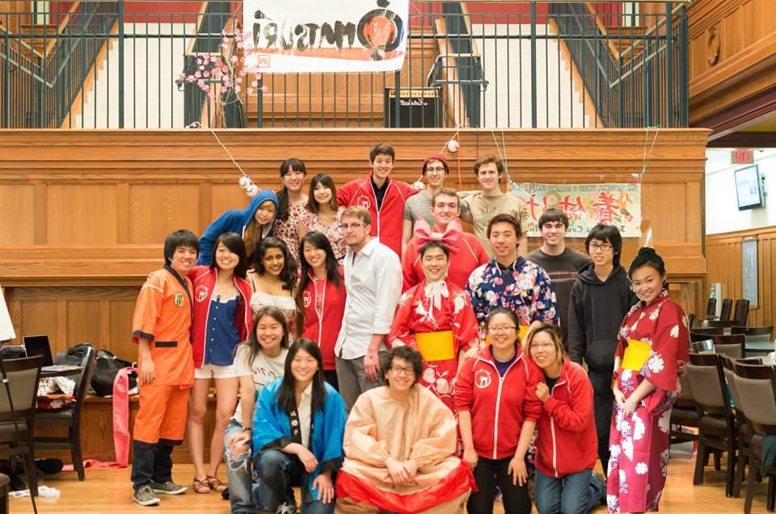
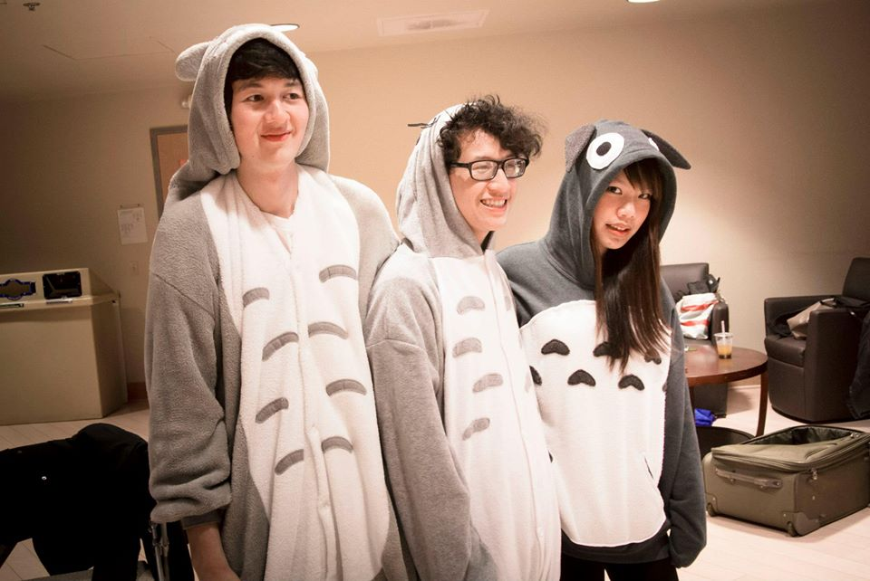
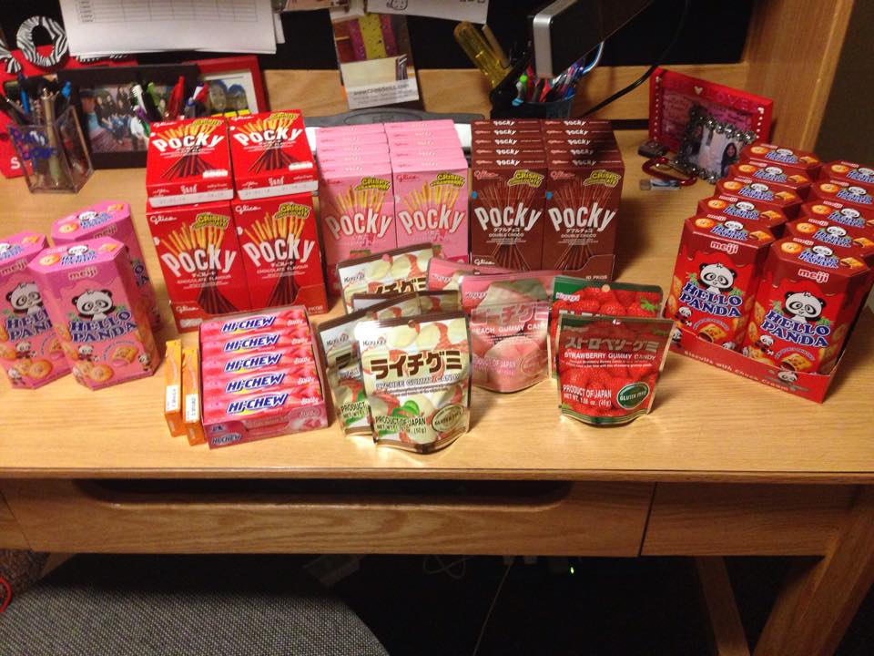
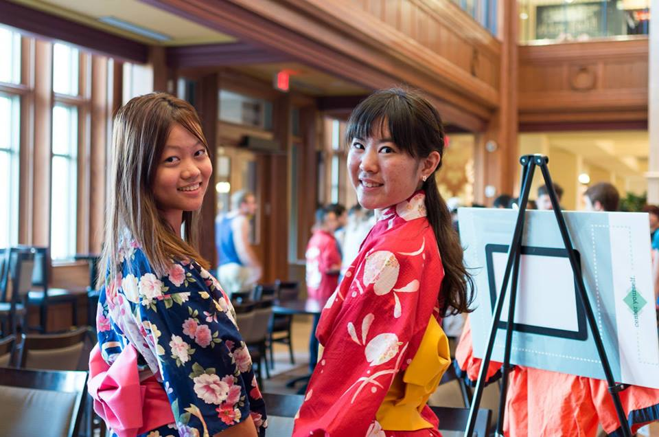
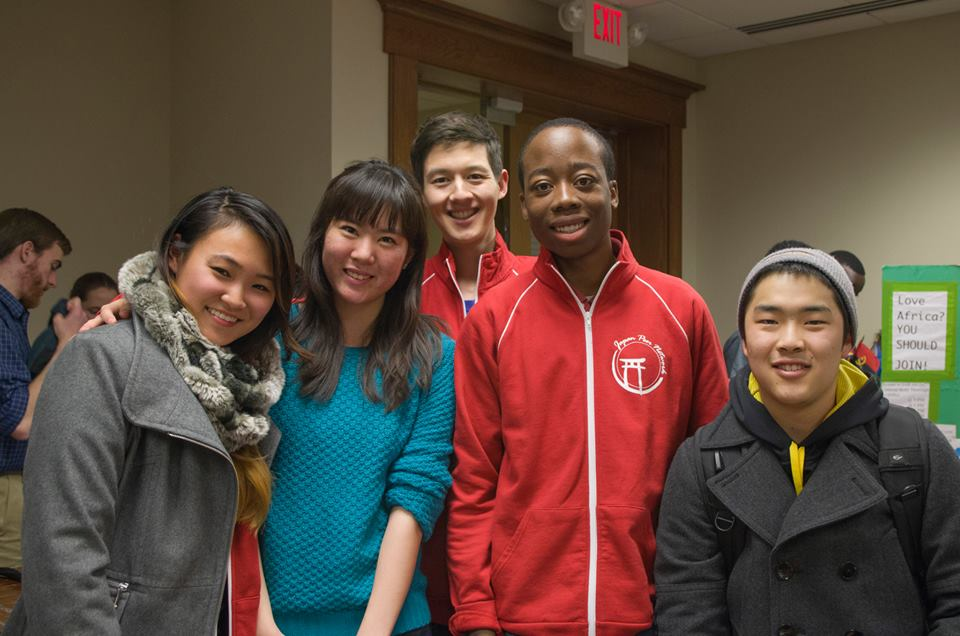

The mission of our group is to raise awareness about various aspects of Japanese culture in the Washington University community. We also seek to establish a community of students originating from or interested in Japan. Our club brings people together through a series of events and the pursuit of knowledge about a culture we are all passionate about. If you are interested in learning more about our club, please contact us! We would be happy to hear from you.
All members of our exec board are expected to come and participate in our weekly executive meetings where we discuss and plan our upcoming events. For those who are too busy, but still want to connect with people from our club, simply come and enjoy our events. Information about them can be found on our Facebook page, as well as on flyers we hang up before the event.




